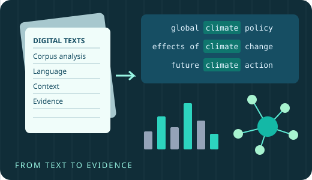

LNB corpus platform
Latvian digital research corpora, concordances and frequency queries.
Technical week 06 · Version 1 · 90 minutes
From text to evidence: explore frequency, context and lexical patterns in digital discourse.
Digital Humanities · Proposed teaching date: 2 December 2026

These laboratories use JavaScript models, not a Python interpreter. All corpus examples are invented. Python snippets can be copied into Colab; no dedicated Week 06 notebook is available yet. No live API requests or external dependencies are required for the browser labs.
Review Week 03 Python notebook · Download teaching corpusSection 1 · 8 min
A corpus is a collection of linguistic material assembled according to explicit selection criteria for a research purpose. A subcorpus is a selected subset; a reference corpus provides a comparison baseline. A document is an individual unit with metadata (source, language, date, genre). A token is one occurrence; a type is a distinct token. A lemma is a dictionary form, not simply a lowercased token.
Representativeness depends on the target population, sampling and coverage. A large biased corpus remains biased. Week 04 structured records and Week 05 scraped articles become inputs to the analytical workflow.
Loading synthetic corpus…
Filters are shared by later text labs. Compare one language at a time.
Results will appear when JavaScript is available.
Try selecting one year or genre. How many documents and tokens remain? Do those documents represent a real population? No: all 24 records are synthetic. Provenance and license.
Section 2 · 10 min
Raw documents → text extraction → tokenization → normalization → optional linguistic processing → analytical corpus. Preserve original text and metadata. Our tokenizer normalizes Unicode to NFC, then extracts maximal runs of letters, combining marks and numbers; punctuation is omitted unless explicitly retained. Simple lowercasing is not full Unicode case folding. Hyphens and apostrophes split words. This is a pedagogical model, not a linguistic tokenizer.
This lab is independent of the shared corpus; punctuation and stop-word settings do not silently change other denominators.
Results will appear when JavaScript is available.
Compare pilsēta, pilsētas, pilsētā, pilsētu, pilsētām: these surface forms can share the lemma pilsēta. Lowercasing is not lemmatization. A Latvian morphological analyser is preferable to naïve suffix removal. Stop words are not intrinsically uninformative: pronouns, negations and function words may reveal framing.
Run the following Python snippets sequentially in the same Colab notebook.
import unicodedata
from collections import Counter
def tokenize(text, lower=True):
# NFC; maximal runs of Unicode letters, marks and numbers.
result, current = [], []
for char in unicodedata.normalize("NFC", text):
if unicodedata.category(char)[0] in "LMN":
current.append(char)
elif current:
result.append("".join(current))
current = []
if current:
result.append("".join(current))
return [t.lower() for t in result] if lower else result
tokens = tokenize("Rīga un Rīga. Klimata politika.")
print(Counter(tokens))Section 3 · 12 min
Absolute frequency counts occurrences. Relative frequency divides by the number of tokens under the same documented policy. Multiply by a conventional base: rate = count / total tokens × base. A zero-token corpus has no defined rate.
Change corpus sizes independently. Compare raw counts with rates.
Results will appear when JavaScript is available.
Initially A has eight occurrences per thousand and B four, despite B having more raw matches. Normalization corrects for size, not selection bias, genre or temporal composition.
def normalized_frequency(count, total_tokens, base=1000):
return count / total_tokens * base if total_tokens else None
print(normalized_frequency(80, 10_000)) # 8.0
print(normalized_frequency(200, 50_000)) # 4.0Section 4 · 15 min
A concordance lists occurrences of a search term in context. KWIC means Key Word in Context. A context window of ±4 tokens displays up to four tokens to either side. Our single-token search uses the shared corpus filters, does not cross document boundaries, and shows original token casing; punctuation is omitted. It may cross sentence boundaries.
Try climate, policy or action; switch to Latvian and search klimata. Expand a document ID to inspect the full source.
Results will appear when JavaScript is available.
Sorting neighbours can reveal repeated phrases, but a narrow window can hide negation, irony and wider context. Inspect the full document before making interpretive claims.
def concordance(tokens, keyword, window=4):
results = []
for i, token in enumerate(tokens):
if token.lower() == keyword.lower():
left = tokens[max(0, i-window):i]
right = tokens[i+1:i+1+window]
results.append((left, token, right))
return results
# Call independently for each document; reuse tokenize above.
print(concordance(tokenize("Climate policy and climate action", lower=False), "climate", 2))Section 5 · 10 min
An n-gram is a contiguous sequence of n tokens: unigram (climate), bigram (climate change), trigram (global climate change), four-gram (effects of climate change), five-gram (the effects of climate change). A sequence of N tokens yields max(0, N − n + 1) n-grams. This lab never crosses document boundaries. The optional sentence boundary uses a simple split at periods, question marks and exclamation marks; abbreviations make this approximation imperfect.
Inspect the top 15 sequences. Repeated phrases may reflect editorial templates, topic or conventional language.
Results will appear when JavaScript is available.
def get_ngrams(tokens, n=2):
return [tuple(tokens[i:i+n]) for i in range(len(tokens)-n+1)]
documents = ["Climate policy", "Climate action"]
counts = Counter(g for doc in documents
for g in get_ngrams(tokenize(doc), 2))
print(counts)Section 6 · 12 min
N-grams require adjacency; co-occurrences are tokens in a specified window around each target. Collocation analysis investigates characteristic lexical associations, often with statistical measures. This lab reports raw positional neighbour counts: each target occurrence contributes every position in its window, excluding the target position itself. Overlapping windows can count the same token more than once; another occurrence of the target can be a neighbour. Windows never cross documents but may cross sentences.
The stop-word option hides neighbours after counting; it does not change positions or denominators.
Results will appear when JavaScript is available.
Raw count is not association strength. PMI compares observed joint probability with an independence baseline and may favour rare pairs; logDice and log-likelihood use different evidence and assumptions. Exact definitions require a specified event space and frequency model. These measures are not calculated in Version 1.
def cooccurrences(tokens, keyword, window=3):
counts = Counter()
for i, token in enumerate(tokens):
if token == keyword:
counts.update(tokens[max(0, i-window):i])
counts.update(tokens[i+1:i+1+window])
return counts
counts = cooccurrences(tokenize("climate policy and climate action"), "climate", 2)
print(counts.most_common())Section 7 · 10 min
Comparing fictional environmental and business publications illustrates how topic and genre may influence vocabulary. The comparison uses both sources, respecting language, year and genre filters but deliberately ignoring the source filter. Rates use all word tokens, not just the requested words. Each bar pair is scaled independently for that word; use the table to compare rates across words.
Inspect raw counts and normalized frequencies. At most 20 distinct single-token queries; invalid phrases are ignored.
Results will appear when JavaScript is available.
Differences in lexical frequency do not establish ideological differences. Topic mix, dates, intended audience and genre are alternative explanations. Use concordances to examine the direction and framing of the differences. These invented texts cannot establish actual media bias.
# Reuse tokenize and normalized_frequency from earlier sections.
corpora = {
"A": ["Climate policy supports climate action."],
"B": ["Climate policy supports investment and economic growth."]
}
for label, documents in corpora.items():
tokens = [t for doc in documents for t in tokenize(doc)]
count = tokens.count("climate")
print(label, len(tokens), count, normalized_frequency(count, len(tokens)))Section 8 · 5 min
Python is one option, not the only corpus research environment. Established tools implement many of these methods; their tokenization, annotation and query semantics may differ.
Latvian digital research corpora, concordances and frequency queries.
Latvian language corpora and resources.
Corpus querying, word sketches and association measures.
Exploratory text analysis and visualization.
Desktop concordance and corpus analysis.
Custom, reproducible processing with explicit policies.
Optional: choose a suitable real corpus, run a query for klimata, record the corpus name, query, date, and context settings; compare results with this simplified model. External tools may require access or an account.
Section 9 · 8 min
Use the corpus ID and source labels when quoting examples. This is a formative method exercise, not real-world media research. For an actual project, collect appropriately licensed and representative documents. See research workflow.
Try a single year or genre; compare how conclusions change. Examine the historical climate-change analysis notebook as an independent candidate case study (not validated as a Week 06 companion). Read the Veidenbaums text or Alice text after checking edition and reuse rights.
Check your understanding. These questions are not graded.
Stored only in this browser where local storage is available. Not a grade.
0 / 6 items marked